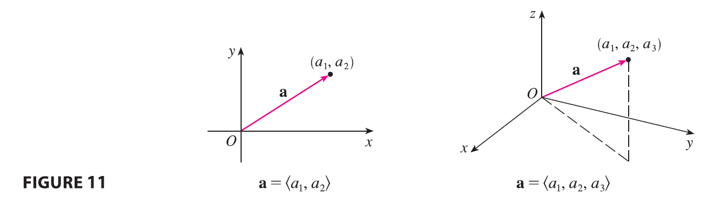
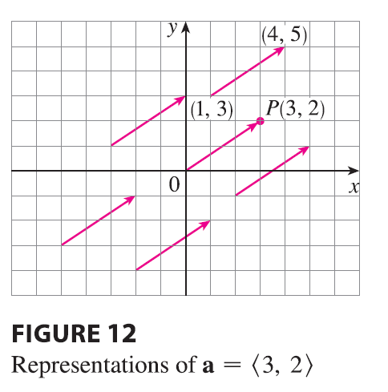
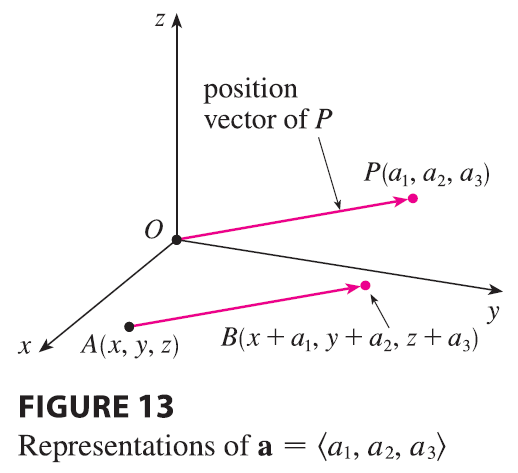

For some purposes it’s best to introduce a coordinate system and treat vectors algebraically. If we place the initial point of a vector a at the origin of a rectangular coordinate system, then the terminal point of a has coordinates of the form \((a_1, a_2)\) or \((a_1, a_2, a_3)\), depending on whether our coordinate system is two- or three-dimensional (see Figure 11).

These coordinates are called the components of a and we write \[ \mathbf{a} = \langle a_1, a_2 \rangle \quad \text{or} \quad \mathbf{a} = \langle a_1, a_2, a_3 \rangle \]
We use the notation \(\langle a_1, a_2 \rangle\) for the ordered pair that refers to a vector so as not to confuse it with the ordered pair \((a_1, a_2)\) that refers to a point in the plane.

For instance, the vectors shown in Figure 12 are all equivalent to the vector \(\vec{OP} = \langle 3, 2 \rangle\) whose terminal point is \(P(3, 2)\). What they have in common is that the terminal point is reached from the initial point by a displacement of three units to the right and two upward. We can think of all these geometric vectors as representations of the algebraic vector \(\mathbf{a} = \langle 3, 2 \rangle\). The particular representation \(\vec{OP}\) from the origin to the point \(P(3, 2)\) is called the position vector of the point \(P\).
In three dimensions, the vector \(\mathbf{a} = \vec{OP} = \langle a_1, a_2, a_3 \rangle\) is the position vector of the point \(P(a_1, a_2, a_3)\). (See Figure 13.)

Let’s consider any other representation \(\vec{AB}\) of a, where the initial point is \(A(x_1, y_1, z_1)\) and the terminal point is \(B(x_2, y_2, z_2)\). Then we must have \(x_1 + a_1 = x_2, y_1 + a_2 = y_2,\) and \(z_1 + a_3 = z_2\) and so \(a_1 = x_2 - x_1, a_2 = y_2 - y_1,\) and \(a_3 = z_2 - z_1\). Thus we have the following result.
Given the points \(A(x_1, y_1, z_1)\) and \(B(x_2, y_2, z_2)\), the vector a with representation \(\vec{AB}\) is \[ \mathbf{a} = \langle x_2 - x_1, y_2 - y_1, z_2 - z_1 \rangle \tag{1} \]
EXAMPLE 3 Find the vector represented by the directed line segment with initial point \(A(2, -3, 4)\) and terminal point \(B(-2, 1, 1)\).